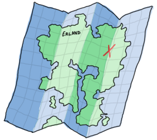

Higher Order Functions
Let's get functional
Trong các chương trước chúng ta đã tiếp cận rất nhiều các thành phàn quan trong của ngôn ngữ lập trình rồi ( danh sách, đệ quy ), ở chương này ta cũng tìm hiểu một thành phần cũng quan trong không kém. Như bạn biết trong một số ngôn ngữ đôi khi ta thấy định nghĩa một hàm, sau đó dùng hàm đó như một tham số đầu vào cho một hàm khác. nói cách khác, hàm sẽ được coi như một tham số , biến và có thể sử dụng như bất kỳ các biến nào khác trong một hàm. những hàm như thế này được gọi dưới một cái tên là higher order function. Higher order function là một hàm chấp nhận một hàm khác như một tham số truyền vào. Higher order functions là một phương pháp trừu tượng mạnh mẽ và là công cụ tốt nhất trong Erlang.
Hơn nữa, nguồn gôc của khai niệm này xuất phát từ toán học, cụ thể là lambda calculus. tôi sẽ không đi sâu vào lambda calculus bởi vì rất khó để có thể nắm vững được lý thuyết này trong thời gian ngắn và nó vượt xa khỏi những kiến thức mà chúng ta cần trong chương này, tuy vậy tôi vẫn sẽ mô tả một cách ngắn gọn, nó như một hệ thống trong đó mọi thứ là hàm, thậm chí là số . bởi vì bất kỳ những hàm nào, những hàm chấp nhận các hàm khác như một tham số và có thể sử dụng chùng cùng với các hàm khác!
Vâng, có một chút lã lẫm và khó để hình dung dựa trên lý thuyết , do đó chúng ta sẽ đi vào các ví dụ cụ thể để hiẻu rõ hơn:
-module(hhfuns). -compile(export_all). one() -> 1. two() -> 2. add(X,Y) -> X() + Y().
Hãy lưu lại vào một file module và biên dịch, sau đó mở shell lên và gõ:
1> c(hhfuns).
{ok, hhfuns}
2> hhfuns:add(one,two).
** exception error: bad function one
in function hhfuns:add/2
3> hhfuns:add(1,2).
** exception error: bad function 1
in function hhfuns:add/2
4> hhfuns:add(fun hhfuns:one/0, fun hhfuns:two/0).
3
Thật khó hiểu? tại sao dòng lệnh số 2 lại không hoạt động ? Nếu bạn hiểu được nguyên tắc làm việc của việc dùng hàm như một tham số trong Erlang,
thì nó sẽ trở nên rõ ràng hơn. Như ta thấy ở dòng số hai, atom one và two được truyền vào hàm add/2,
ở phía trên chúng ta định nghĩa 2 one/0 và two/0 và sử dụng hai atom này cho tên của hai hàm
và gọi (X() + Y()). tuy nhiên trong Erlang , nếu tên của hàm mà được viết không cùng với một danh sách sách đối số truyền vào thì
trình dịch vẫn hiểu nó như một atom thường, do giải thích lí do tại sao trong thân hàm ở dòng lệnh số hai không hoạt động.
Tương tự giải thích cho dòng lệnh số 3, ta truyền vào hai giá trị là kiểu dữ liệu số , so đó nó không thể hoạt động được bởi vì hai giá trị đó không phải là
hàm.
Vì vây, chúng ta phải sử dụng một phương pháp mới để có thể sử dụng một hàm như một đôi số truyền vào hàm khác và gọi nó bên trong hàm đó.
Trong Erlang chúng ta sẽ sử dụng công thức fun Module:Function/Arity: tượng tự như vd dòng lệnh thứ 4,
khi sử dụng công thức này , máy ảo sẽ ghi nhận nó như hôm hàm, và cho phép gán với một giá trị.
Vậy những gì chúng ta sẽ nhận được từ việc sử dụng các hàm theo cách này ?
Để hiêỉ hơn chúng ta sẽ đi xét một ví dự cụ thể. , chúng ta sẽ đinh nghĩa hai hàm increment và decrement
và đặt chúng trong module hhfuns
, hai hàm này sẽ ứng với tên gọi của nó, được dùng để tăng giảm giá trị của các số nguyen trong một danh sách lên một đơn vị, và ta sẽ sử dụng đệ quy để viêt chúng:
increment([]) -> []; increment([H|T]) -> [H+1|increment(T)]. decrement([]) -> []; decrement([H|T]) -> [H-1|decrement(T)].
Bạn có thể nhin thấy sự tương đồng giữa hai hàm trên ? về cơ bản chúng không khác nhau: duyêt một danh sách,
ở mối phần tử của danh gọi tới toán tử + hay -, và tiếp tục lặp lại cho tới cuối dánh sách
. Hầu như chúng không có gì thay đổi nhiều trong đoạn mã ngoại trừ việc áp dụng toán tử ( hoặc có thể là hàm ) và lời gọi đệ quy hai hàm khác nhau.
Còn lại các thành phần như làm việc với một danh sách bên trong lời gọi đệ quy là như nhau.
Từ dó, chúng ta có thể quy ước các thanh phần tương tự nhau như vậy vào một hàm chung , gọi là map/2, hàm này sẽ
nhận một đầu vào là một hàm khác như một đối số :
map(_, []) -> []; map(F, [H|T]) -> [F(H)|map(F,T)]. incr(X) -> X + 1. decr(X) -> X - 1.
Giờ hãy biên dịch đoạn mã trên và mở shell lên để kiểm tra:
1> c(hhfuns).
{ok, hhfuns}
2> L = [1,2,3,4,5].
[1,2,3,4,5]
3> hhfuns:increment(L).
[2,3,4,5,6]
4> hhfuns:decrement(L).
[0,1,2,3,4]
5> hhfuns:map(fun hhfuns:incr/1, L).
[2,3,4,5,6]
6> hhfuns:map(fun hhfuns:decr/1, L).
[0,1,2,3,4]
Để ý rằng kết qủa của hàm gọi từ module và hàm gọi từ higher older function là như nhau.
nhưng cách viết của higher older function mà bạn vừa tạo ra trông rất smart abstraction!
bằng cách sử dụng higher older function, mỗi khi bạn muốn áp dụng một hàm hay một biểu thử cho mỗi một phần tử trong danh sách
bạn chỉ cần sử dụng hàm đó nhu một tham số truyền vào tới hàm map/2 thay vì nhưng trước ta đưa ra chi tiết hàm cần gọi hàm bên trong.
Tuy vậy, có một chút phiền phức khi mỗi lần muón truyền vào một hàm tới map/2 ta lại phải định nghĩa tên một hàm, export , và biên dịch nó, etc.
However, it is a bit annoying to have to put every function we want to pass as a parameter to map/2 in a module, name it, export it, then compile it, etc.
In fact it's plainly unpractical. What we need are functions that can be declared on the fly...
Hàm ẩn danh (Anonymous functions)
Anonymous functions , viết là funs, để giải quyết vấn đề trên, đây là một hàm đặc biêt được dùng bên trong (inline) một module hay hàm ( sử dụng cục bộ ) và không cân phải khai báo tên hàm, . bởi vì chúng không được đặt tên do đó ngoài trừ việc không thể sử dụng chúng như một hàm đệ quy (how could they do it if they are anonymous?) ra còn lại chúng có hoạt động như một hàm thông thường được, cú pháp định nghĩa đối với anonymous functions như sau:
fun(Args1) ->
Expression1, Exp2, ..., ExpN;
(Args2) ->
Expression1, Exp2, ..., ExpN;
(Args3) ->
Expression1, Exp2, ..., ExpN
end
Bạn có thấy thấy chúng không khác nhiều định nghĩa một hàm thông thường, và chúng có thể đươc sử dụng theo các cách sau:
7> Fn = fun() -> a end. #Fun<erl_eval.20.67289768> 8> Fn(). a 9> hhfuns:map(fun(X) -> X + 1 end, L). [2,3,4,5,6] 10> hhfuns:map(fun(X) -> X - 1 end, L). [0,1,2,3,4]
Giờ có lẽ bạn phần nào hiểu tạo tại sao nhiều người thích thú với lập trình hàm: đây là một trong những khẳ năng tạo ra các dữ liệu trức tượng ở mức thấp của mã (low level of code). Khái niệm này giống với vòng lặp do đó chúng sẽ tập trung vào những gì chúng làm được hơn là tìm hiểu cách hoạt đống của chúng.
Anonymous functions are already pretty dandy for such abstractions but they still have more hidden powers:
11> PrepareAlarm = fun(Room) ->
11> io:format("Alarm set in ~s.~n",[Room]),
11> fun() -> io:format("Alarm tripped in ~s! Call Batman!~n",[Room]) end
11> end.
#Fun<erl_eval.20.67289768>
12> AlarmReady = PrepareAlarm("bathroom").
Alarm set in bathroom.
#Fun<erl_eval.6.13229925>
13> AlarmReady().
Alarm tripped in bathroom! Call Batman!
ok
Gọi cho Batman đi! Chuyện quái gì đang xảy ra ở đây vậy ?
Trước tiện , chúng ra khai báo một anonymous function và gán nó vào biến PrepareAlarm.
để ý rằng sau khi gán, hàm này vẫn chưa được thực thi:
chỉ cho tới khi chúng ra gọi PrepareAlarm("bathroom") , nó mới được thực.
tuy nhiên hãy để ý tại thời điểm ta gán tới biến, ở biểu thức thứ nhất lời gọi hàmio:format/2 đã được thẩm định và thực hiện cùng với dòng chữ
"Alarm set" đã được in ra. Nhưng ở biêủ thức thứ hai ( một anonymous function khác )
, nó sẽ trả về một hàm gán và gán tới biến AlarmReady.
Lưu ý rằng trong hàm này, giá trị của biến Room được lấy từ hàm 'cha' (PrepareAlarm).
Chắc hẳn với những ai đã làm quen với một số ngôn ngữ lập trình Prototype ( Lua , Javácript ) sẽ thấy quen thuộc ,đây là một trong những khái niệm liên qua tới closures.
Để hiểu rõ ràng vè closures, đâu tiên ta phải hiểu phạm vị hoạt động ( scope ) của chúng trước đã.
phạm vi hoạt động của một hàm có thể được hình dưng như nơi mà tất cá các biến và giá trị của chúng được lưu trữ
. Ví dụ như trong hàm base(A) -> B = A + 1., biến A vf biến B là một phần được định nghĩa trong hàm base/1.
tức là ở bất cứ nơi nào trong hàm base/1, bạn đều có thể gọi tới và sử dụng biến A và biến B
. Khi tôi nối 'bất cứ đâu', đó không phải là trò đùa, hãy nhìn ví dụ đây, ngay cả trong anonymous functions cũng có thể được:
base(A) ->
B = A + 1,
F = fun() -> A * B end,
F().
hay nhìn biến B và biến A vẫn nằm trong phạm vi của hàm base/1,
và hàm F có thể truy cập , sử dụng được chúng.
giải thích điều này là bởi vì hàm F đang kế thừa các biến trong phạm vi định nghĩa của hàm base/1.
Tương tự với hầu hết các loại kế thừa trong thực tế, con sẽ được thừa hưởng tất cả nhưng gì cha có nhưng ngược lại cha không thể
có những gì mà con đang có:
base(A) ->
B = A + 1,
F = fun() -> C = A * B end,
F(),
C.
Ở hàm trên, biến B được gán băng giá trị của A + 1 và định nghĩa một anonymous function F, bên trong đó ta tại ra một biến
C, và chúng ta sẽ sủ dụng hàm F ngay sau biểu thức định nghĩa của nó.Tuy nhiên,
hay để ý, biến C chỉ có phạm vi hoạt động bên trong thân của hàm F.
ở biểu thức cuối trong thân hàm base/1, lỗi sẽ xảy ra nếu nó cố truy cập vào biến C,
bởi vì máy ảo nhìn nhận nó như một biến chưa được liên kết giá trị it ( unbound variable ).
đây là một trong những điểm lưu ý về phạm vi kế thừa của một It is important to note that the inherited scope follows the anonymous function wherever it is, thậm chí ngay cả khi nó được truyền vào một hàm khác:
a() ->
Secret = "pony",
fun() -> Secret end.
b(F) ->
"a/0's password is "++F().
Hãy biên dịch và kiểm tra hàm trên
:
14> c(hhfuns).
{ok, hhfuns}
15> hhfuns:b(hhfuns:a()).
"a/0's password is pony"
Who told a/0's password? Well, a/0 did.
như đã giải thích ở trên, một anonymous function được khai báo bên trong hàm a/0,
và hàm b/1 vẫn có quyền truy cập vào anonymous function đó.
Đây là một trong những đặc tính rất hữu ích, nó sẽ cho phép chúng ta mạng nội dung và các tham số ra bên ngoài sử dụng
( giống như cách mà chúng ta đã làm với Batman ở ví dụ trước đó ).
Các anonymous functions thường được sử dụng để lưu trạng thái khi bạn muốn to định nghĩa một hàm với nhiều đối số, nhưng một trong số các đối số này có giá trị không đổi ( constant ), vd:
16> math:pow(5,2). 25.0 17> Base = 2. 2 18> PowerOfTwo = fun(X) -> math:pow(Base,X) end. #Fun<erl_eval.6.13229925> 17> hhfuns:map(PowerOfTwo, [1,2,3,4]). [2.0,4.0,8.0,16.0]
Như bạn thấy, bằng cách đặt lời gọi hàm math:pow/2 vào bên trong một anonymous function cùng với một biến không đôi Base
đã được gán giá trị,
chúng ta có thể sử dụng PowerOfTwo như một biến truyền vào hàm hhfuns:map/2 để áp dụng cho mỗi phần tử của một
danh sách số nguyên.
Với một số ngôn ngữ khác bạn được phép thay đổi phạm vi của biến trong, nhưng với Erlang, chúng ta không được phép thay đổi giá trị khi nó đã có giá trị liên kết rồi do đó chương trình sẽ báo lỗi nếu bạn cố gắng định nghĩa lại phạm vi của bién trong anonymous functions:
base() ->
A = 1,
(fun() -> A = 2 end)().
Bởi vì ban đầu bạn định nghĩa một biên A và liên kết nó với một giá trị, sau đó định nghĩa anonymous function và gọi.
Ta thấy anonymous function sẽ kế thừa phạm vi của hàm base/0,
Do đó nó cũng sẽ kế thừa biến A, trong hàm anonymous function bạn lại sử dụng toán tử
= để so sánh khớp biến A với giá trị 2 nhưng bién A đã được liên kết với giá trị trước đó rôi (liên kết với 1).
Do đó nó không được phép và dẫn tới lỗi.
tuy nhiên chúng ta vẫn có cách để định nghĩa lại giá trị của một biến bằng cách sử dụng hàm lồng nhau như sau:
base() ->
A = 1,
(fun(A) -> A = 2 end)(2).
Giờ hãy thử biên dịch và kiểm tra xem, nó sẽ hoạt động mà không nó bất kỳ lỗi nào, thay vào đó bạn sẽ chỉ nhận một cảnh báo shadowing ("Warning: variable 'A' shadowed in 'fun'"). Shadowing là thuật ngữ dùng để mô tả tình huống định nghĩa một biến mới mà tên của biến đó đã trùng với tên của biến đã được sử dụng ở phạm vi gốc. Cánh báo này được đưa ra để ngăn chặn các lỗi có thể xảy ra ( thương là chính xác lỗi xảy ra) do đó bạn cần cân nhắc việc tới việc đổi tên các biến của bạn trong các trường hợp như vậy.
Update:
Tuy nhiên bắt đầu từ phiên bản 17.0 trở đi, Bạn có thể định nghĩa tên cho anonymous functions
Điều thú vị ở đây là mặc dù tên của hàm chỉ sử dụng bên trong phạm vi hoạt động của hàm đó chứ không dùng ở các thành phần khác nhưng bằng vào việc đặt tên , ta có sử dụng đệ quy đổi với các anonymous functions The main advantage of this is that it makes it possible to define anonymous recursive functions. vd, bằng cách dùng anonymous function kết hơp với đê quy chúng ta có thể tao ra một lặp vô hạn ( bạn sẽ thấy trong các chương sau vòng lặp vô hạn là môt trong những thành phần quan trọng trong Erlang ):
18> f(PrepareAlarm), f(AlarmReady).
ok
19> PrepareAlarm = fun(Room) ->
19> io:format("Alarm set in ~s.~n",[Room]),
19> fun Loop() ->
19> io:format("Alarm tripped in ~s! Call Batman!~n",[Room]),
19> timer:sleep(500),
19> Loop()
19> end
19> end.
#Fun<erl_eval.6.71889879>
20> AlarmReady = PrepareAlarm("bathroom").
Alarm set in bathroom.
#Fun<erl_eval.44.71889879>
21> AlarmReady().
Alarm tripped in bathroom! Call Batman!
Alarm tripped in bathroom! Call Batman!
Alarm tripped in bathroom! Call Batman!
...
Như ta thấy ở ví dụ trên chúng ta đã tạo ra một anonymous function đệ quy cùng với tên và gán tới một biến, biến này ta hay tạm gọi là biến lặp Lặp , and within that scope, will be usable as any other similar variable pointing to an anonymous function. This should generally make a lot of operations in the shell a lot less painful moving on forward.
Tiếp theo chúng ta sẽ tạm thời We'll set the anonymous function theory aside a bit and we'll explore more common abstractions to avoid having to write more recursive functions, like I promised at the end of the previous chapter.
Maps, filters, folds and more
Ở phần đầu của mục này , trước tiên tôi sẽ mô ta ngắn gọn trừu tượng cách để viết hàm map/2, đồng thời tôi cũng chứng minh
một hàm tương tự như vậy cũng có thể sử dụng với mỗi phần tử của bất kỳ kiểu danh sách nào. hàm map/2 của chúng ta sẽ thực hiện như sau:
map(_, []) -> []; map(F, [H|T]) -> [F(H)|map(F,T)].
Têy vậy cũng có rất nhiều cách trừu tượng tương tự để xây dụng từ các hàm đệ quy. trước tiên chúng ra hay thử ví dụ với hai hàm sau:
%% only keep even numbers
even(L) -> lists:reverse(even(L,[])).
even([], Acc) -> Acc;
even([H|T], Acc) when H rem 2 == 0 ->
even(T, [H|Acc]);
even([_|T], Acc) ->
even(T, Acc).
%% only keep men older than 60
old_men(L) -> lists:reverse(old_men(L,[])).
old_men([], Acc) -> Acc;
old_men([Person = {male, Age}|People], Acc) when Age > 60 ->
old_men(People, [Person|Acc]);
old_men([_|People], Acc) ->
old_men(People, Acc).
Với vi dụ đâu tiên, hàm này sẽ nhận đầu vào là một dash sách chữ số và lọc ra để trả về kết quả là danh sách số chắn.
Hàm thứ hai tương tự nhận đầu vào là một danh sách bộ thông tin về người có dạng {Gender, Age}, sau đó lọc và đưa ra kết quả ;à những người giới tính là nam và có đô tuổi
dưới 60. Mặc dù để tìm sự tương đồng giữa hai hàm này khó hơn chút, nhưng chúng ta hãy xét một số điểm chung giữa chúng trc, và hãy để ý cả
hai hàm này về mặt chức năng thực hiện rất giống nhau, chúng cũng nhận đầu vào là một kiểu dữ liệu danh sách và trả về các phần tử qua một số hoạt động kiểm tra
(hay dữ đoán), những phần tử còn lại cùng hoạt động kiểm tra không đúng thì loại bỏ. Từ góc nhìn tổng quát này, chúng ra có thể rút ra được những thông tin cần thiết
và quy ước thành một chức năng như sau:
filter(Pred, L) -> lists:reverse(filter(Pred, L,[])).
filter(_, [], Acc) -> Acc;
filter(Pred, [H|T], Acc) ->
case Pred(H) of
true -> filter(Pred, T, [H|Acc]);
false -> filter(Pred, T, Acc)
end.
Tiếp đó, để sử dụng hàm filter này, chúng ra chỉ cần kiểm tra kết quả hoạt động.Nào hãy biên dịch file module
To use the filtering function we now only need to get the test outside of the function. Compile the
hhfuns và chạy:
1> c(hhfuns).
{ok, hhfuns}
2> Numbers = lists:seq(1,10).
[1,2,3,4,5,6,7,8,9,10]
3> hhfuns:filter(fun(X) -> X rem 2 == 0 end, Numbers).
[2,4,6,8,10]
4> People = [{male,45},{female,67},{male,66},{female,12},{unknown,174},{male,74}].
[{male,45},{female,67},{male,66},{female,12},{unknown,174},{male,74}]
5> hhfuns:filter(fun({Gender,Age}) -> Gender == male andalso Age > 60 end, People).
[{male,66},{male,74}]
Hai ví dụ trên chỉ cho chúng ta bằng cách sử dụng hàm filter/2, lập tình viên sẽ không quan tâm tới việc đinh nghĩa cho từng thành phần mà thay vào đó
họ chỉ cần quan tâm tới việc tạo kết quả mong muốn từ một danh sách gốc hay nói cách khác họ chỉ cần xác đinh truyền vào điều kiện cần qua một hàm và một danh sách, sau đó lọc danh sách đó
. Việc lặp qua một danh sách và loại bỏ những gi chúng ta không mong muốn không cón cần thiết nữa.
điều này là rất quan trong cho việc code, lập trình viên sẽ chỉ cần quan tới tới phần càn thay đổi và bỏ qua những thanh phần giống nhau.
Trong chương trước, chúng ta đã viết một số ví dụ về hàm đệ quy làm việc với kiểu dữ liệu danh sách, trong đó với mỗi phần tử của danh sách chúng ta sẽ tiến hành kiểm tra và đưa chúng về một câu trả lời duy nhất. Cách làm này được gọi là fold và có thể sử dụng như sau:
%% find the maximum of a list max([H|T]) -> max2(T, H). max2([], Max) -> Max; max2([H|T], Max) when H > Max -> max2(T, H); max2([_|T], Max) -> max2(T, Max). %% find the minimum of a list min([H|T]) -> min2(T,H). min2([], Min) -> Min; min2([H|T], Min) when H < Min -> min2(T,H); min2([_|T], Min) -> min2(T, Min). %% sum of all the elements of a list sum(L) -> sum(L,0). sum([], Sum) -> Sum; sum([H|T], Sum) -> sum(T, H+Sum).

Để hiểu hoạt , chúng ta sẽ tìm tất các những điểm chung và khác của các hoạt động trong cách ví dụ trên
. Như đã đè cập , bằng cách cách cắt giảm, đưa một danh sách về một giá trị duy nhất.
Do đó, hoạt động fold chỉ lên duy trì một giá trị nhưng vẫn tiến lặp danh sách, chúng ta cũng không cần thiết để xây dựng một danh sách khác
. Do chúng ta cũng không cần tới chốt canh, bởi vì không phải lúc nào cũng cần và nếu cần chúng ta có thê thay bằng hoạt động qua một hàm
. Nhìn phương diện này, nó sẽ giống như việc tính tổng của một danh sách.
Trong cả ba ví dụ trên còn một thành phần nữa mà chúng ta chưa đề cập tới, đó là
giá trị trị khởi tạo ban đầu của mỗi hàm.
như trong trường hợp của hàm sum/2, giá trị khởi tạo là 0, bởi vì với giá trị này phép tính X = X + 0 là một phép tính với két quả không đổi.
trong trường trường hợp tính tích, giá trị sẽ là một ưng với X = X * 1
. Với trường hợp của hàm min/1 và hàm max/1 , giá trị khởi tạo có thể có hoặc không,
bởi trong trường hợp nếu giá trị khởi tạo là 0, thì với đầu vào là một danh sách số nguyên âm, chúng ta có thể sẽ nhận được kết quả sai.
Vì vậy, thông thường trong một số trường hợp ( không phai tất cả moj trường hợp đều đúng ) chúng ta có thể sử dụng phần tử đầu tiên của danh sách như gía trị khởi tạo ban đầu.
Bằng việc lặp, đánh giá các phần từ trong danh sách chúng ta có thể viết như sau:
fold(_, Start, []) -> Start; fold(F, Start, [H|T]) -> fold(F, F(H,Start), T).
Tiếp đó hãy thử kiểm tra:
6> c(hhfuns).
{ok, hhfuns}
7> [H|T] = [1,7,3,5,9,0,2,3].
[1,7,3,5,9,0,2,3]
8> hhfuns:fold(fun(A,B) when A > B -> A; (_,B) -> B end, H, T).
9
9> hhfuns:fold(fun(A,B) when A < B -> A; (_,B) -> B end, H, T).
0
10> hhfuns:fold(fun(A,B) -> A + B end, 0, lists:seq(1,6)).
21
Thật tuyêt, ba hàm trước đó chúng ta định nghĩa phía trên hay với bất kỳ hàm nào dùng cho việc cắt giảm một danh sách tới một phần tử, giá trị duy nhất giờ đều có thể thực hiện thông qua hàm fold.
What's funny there is that you can represent an accumulator as a single element (or a single variable), and an accumulator can be a list. Therefore, we can use a fold to build a list. This means fold is universal in the sense that you can implement pretty much any other recursive function on lists with a fold, even map and filter:
reverse(L) ->
fold(fun(X,Acc) -> [X|Acc] end, [], L).
map2(F,L) ->
reverse(fold(fun(X,Acc) -> [F(X)|Acc] end, [], L)).
filter2(Pred, L) ->
F = fun(X,Acc) ->
case Pred(X) of
true -> [X|Acc];
false -> Acc
end
end,
reverse(fold(F, [], L)).
And they all work the same as those written by hand before. How's that for powerful abstractions?
Map, filters and folds are only one of many abstractions over lists provided by the Erlang standard library (see lists:map/2, lists:filter/2, lists:foldl/3 and lists:foldr/3). Other functions include all/2 and any/2 which both take a predicate and test if all the elements return true or if at least one of them returns true, respectively. Then you have dropwhile/2 that will ignore elements of a list until it finds one that fit a certain predicate, its opposite, takewhile/2, that will keep all elements until there is one that doesn't return true to the predicate. A complimentary function to the two previous ones is partition/2, which will take a list and return two: one that has the terms which satisfy a given predicate, and one list for the others. Other frequently used lists functions include flatten/1, flatlength/1, flatmap/2, merge/1, nth/2, nthtail/2, split/2 and a bunch of others.
You'll also find other functions such as zippers (as seen in last chapter), unzippers, combinations of maps and folds, etc. I encourage you to read the documentation on lists to see what can be done. You'll find yourself rarely needing to write recursive functions by using what's already been abstracted away by smart people.